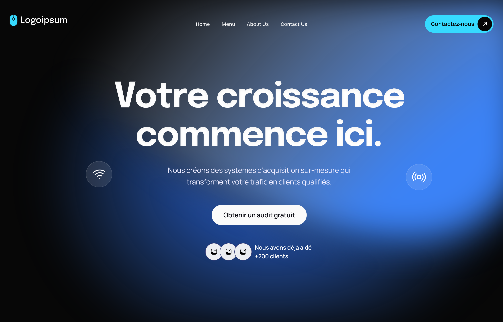
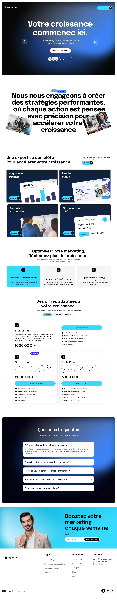
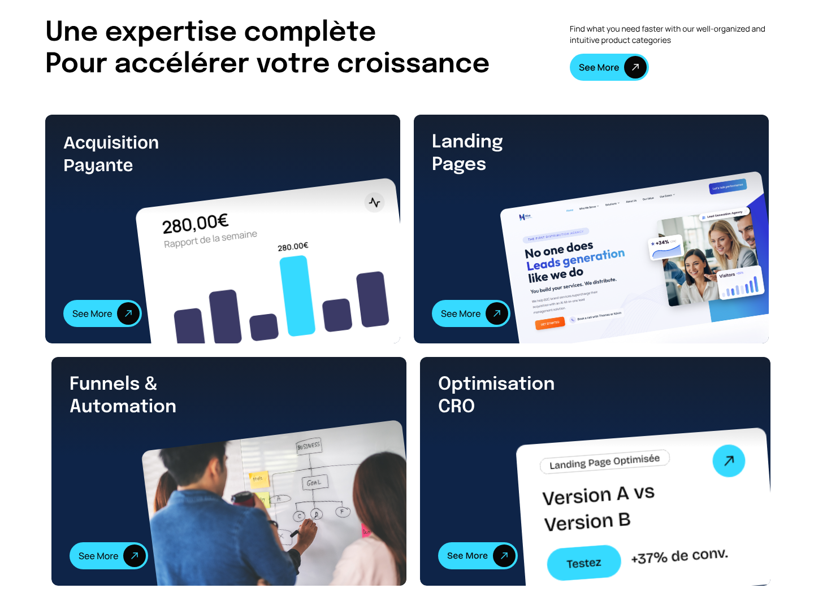
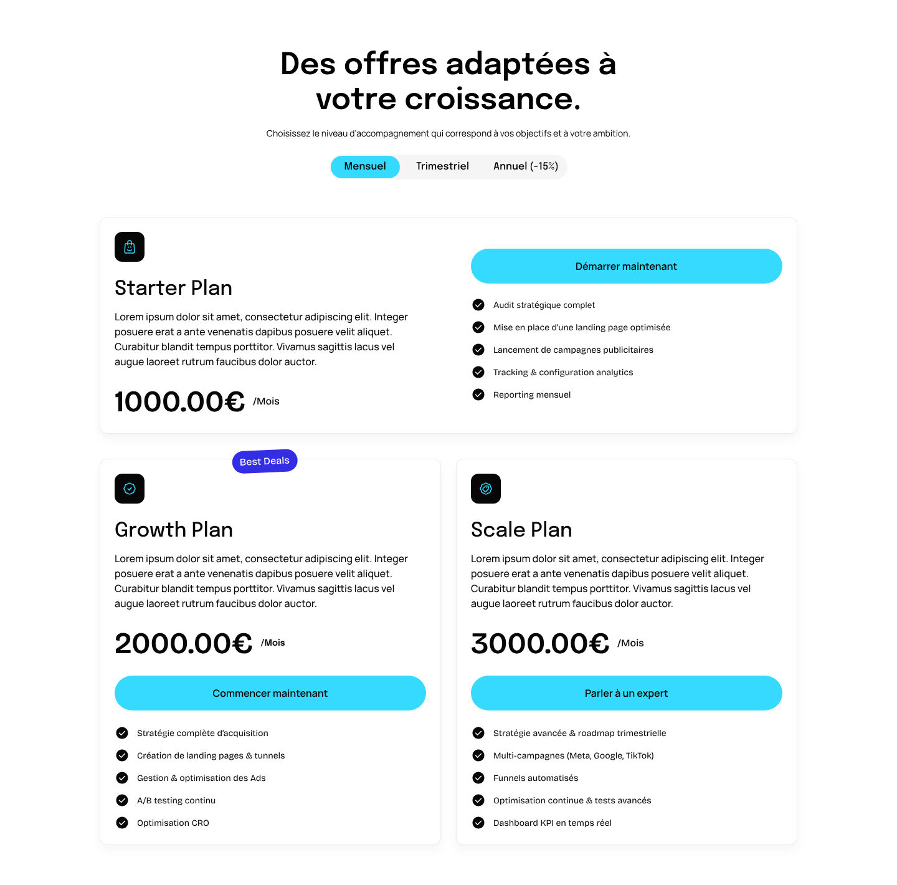
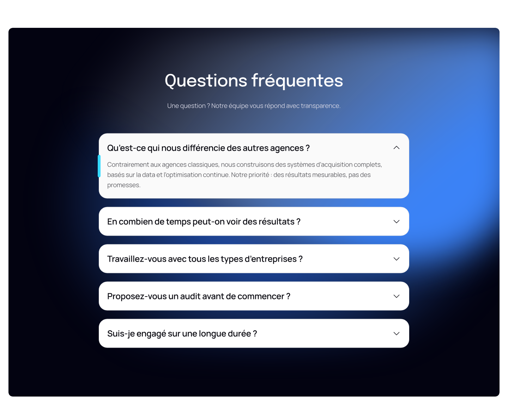

Le projet
J’ai maquetté dans Figma la page d’accueil d’une agence qui crée des systèmes d’acquisition sur mesure, pour transformer le trafic en clients qualifiés.
Même sujet que ma landing violette, avec une tout autre ambiance : plus sombre, plus « tech », centrée sur l’expertise et les offres.
Un hero qui marque
Un titre très gras, une seule promesse et un seul bouton : obtenir un audit gratuit.
Montrer l’expertise
Quatre services présentés comme des cartes d’interface, plutôt qu’en liste.
Rendre les offres lisibles
Trois formules comparables d’un coup d’œil, avec une bascule de durée.
La maquette
Faites défiler ou attrapez la fenêtre pour parcourir la maquette jusqu’au footer.Faites défiler dans la fenêtre pour voir la maquette en entier, jusqu’au footer.
Accueilune seule page
Le hero, un engagement en grand titre avec des photos glissées entre les mots, l’expertise en quatre cartes, la méthode en trois étapes, les offres, la FAQ, une inscription à la newsletter et le pied de page.

Les choix de design
L’expertise est présentée en quatre cartes sombres, chacune avec un petit morceau d’interface : un graphique, une landing page, un tableau de travail, un test A/B.

Les offres se comparent sur une grille simple, avec une bascule mensuel, trimestriel ou annuel et la formule la plus choisie signalée par une pastille.

La FAQ reprend le fond noir et la lueur bleue du hero, pour refermer la page dans la même ambiance.

Une direction artistique
Du noir et du blanc pour la structure, un bleu pour la profondeur et un cyan vif réservé aux boutons.